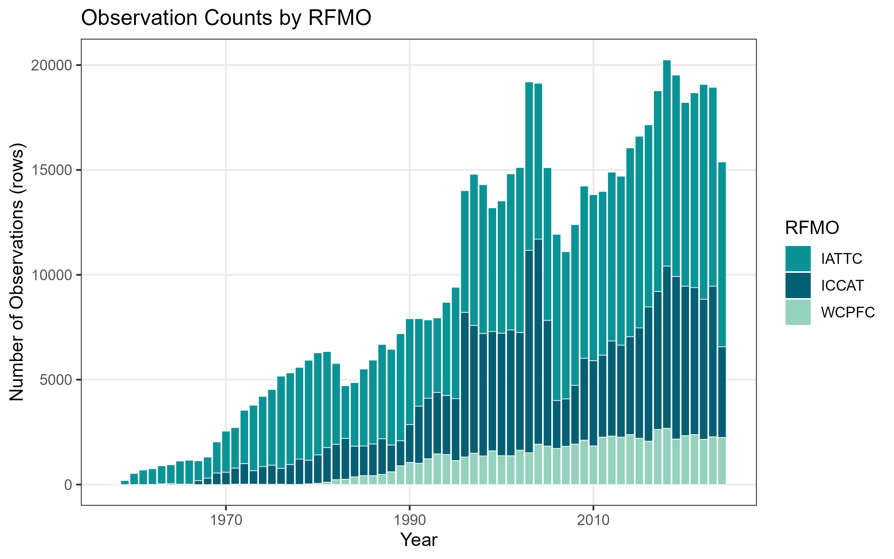
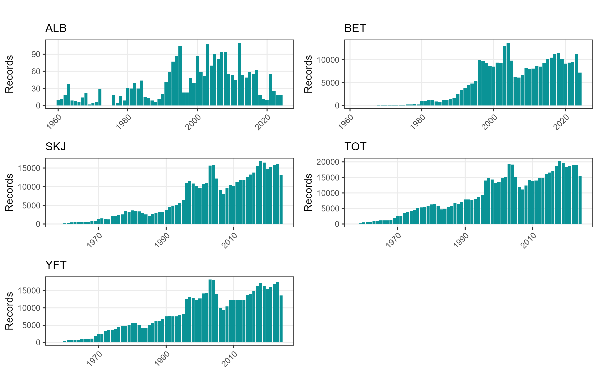
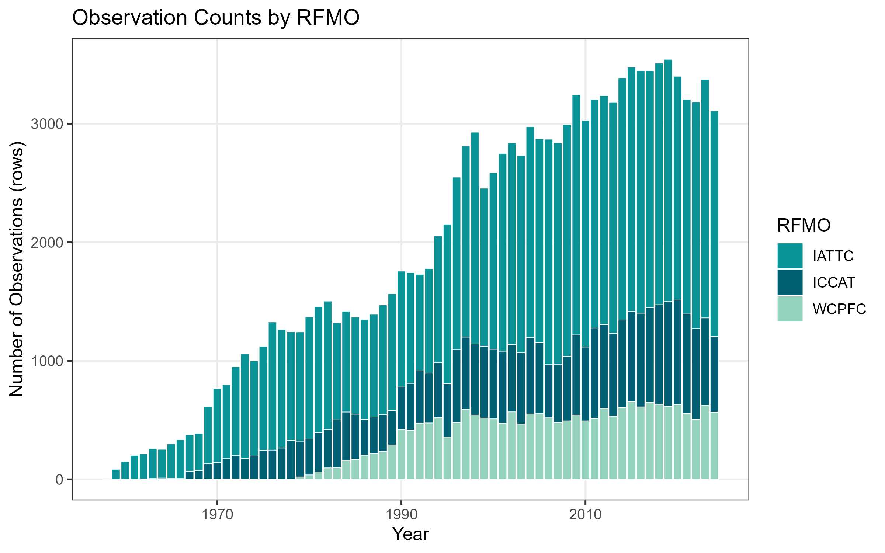

This document provides an overview for users utilizing the harmonized tuna RFMO datasets in this repository. It explains what data are available, how they are structured, and how to load data.
What these data are
This repository harmonizes publicly available catch and effort datasets from three major tuna Regional Fisheries Management Organizations (RFMOs):
IATTC
ICCAT
WCPFC
Each RFMO publishes data in different formats, resolutions, and naming conventions. This repository standardizes them into a unified format so users can work with a single, consistent set of catch and effort datasets.
Available dataset versions
Files located under data/output/
Gear
Spatial
Temporal
Temporal Coverage
By flag
RFMOs Included
Dataset
Versions
purse seine
1°×1°
month
1958–2024
no
IATTC, ICCAT, WCPFC
allrfmo_month_1deg_purseseine
.csv, .rds
purse seine
1°×1°
year
1958–2024
no
IATTC, ICCAT, WCPFC
allrfmo_year_1deg_purseseine
.csv, .rds
purse seine
1°×1°
year
1958–2024
yes
IATTC, ICCAT, WCPFC
allrfmo_year_1deg_purseseine_flag
.csv, .rds
longline
5°×5°
month
1950–2024
no
IATTC, ICCAT, WCPFC
allrfmo_month_5deg_longline
.csv, .rds
longline
5°×5°
month
1950–2024
yes
IATTC, ICCAT, WCPFC
allrfmo_month_5deg_longline_flag
.csv, .rds
longline
5°×5°
year
1951–2024
no
IATTC, ICCAT, WCPFC
allrfmo_year_5deg_longline
.csv, .rds
longline
5°×5°
year
1951–2024
yes
IATTC, ICCAT, WCPFC
allrfmo_year_5deg_longline_flag
.csv, .rds
Available variables
Variables
Description
rfmo
Related RFMO
flag
Flag code in ISO 3166-1 alpha-3 (excluding SUN)
lon
Longitude of fishing activity
lat
Latitude of the fishing activity
year
Year of record
month
Month of record
effort_set
Number of fishing sets
effort_day
Number of fishing days
effort_t_hooks
Thousands of hooks
catch_tot
Total catch (mt)
catch_skj
Catch of skipjack tuna (mt)
catch_alb
Catch of albacore tuna (mt)
catch_bet
Catch of bigeye tuna (mt)
catch_yft
Catch of yellowfin tuna (mt)
Spatial Coverage
Downloading .rds data in R
The harmonized tuna RFMO datasets can be loaded directly into R from this GitHub repository without cloning the repository. The datasets for R are stored as .rds files in the data/output/ directory.
To download a dataset:
Navigate to data/output/ in the GitHub repository.
Select the dataset you want to use.
Copy the Raw file URL (not the regular GitHub webpage URL).
.rds files are recommended for R users, but .csv files are also available for Excel users.
To download a .csv dataset to your computer:
Navigate to the data/output/ directory in the GitHub repository.
Select the .csv file you would like to download.
Click the Download raw file button.
Save the file to your desired location on your computer.
Dataset coverage and overviews
Descriptive temporal and spatial coverage
Dataset Overviews
Month, 1 x 1 degree, purse seine catch and effort


Spatial Coverage
Year, 1 degree, purse seine catch and effort

RFMO observation counts
Year, 1 x 1 degree, purse seine catch and effort with flag data
Month, 5 x 5 degree, longline catch and effort
Month 5 x 5 degree, longline catch and effort with flag data
Year, 5 x 5 degree, longline catch and effort
Year, 5 x 5 degree, longline catch and effort with flag data
Citing this data
User feedback
If you identify a bug, data issue, inconsistency, typo, or other problem, please open a GitHub issue and include as much detail as possible:
Location of the issue: Specify the relevant file, dataset, or script.
Description of the problem: Explain what problem you observed.
Reason for concern: Describe why you believe this may be an issue (e.g., incorrect values, missing information, unclear documentation, incorrect filtering).